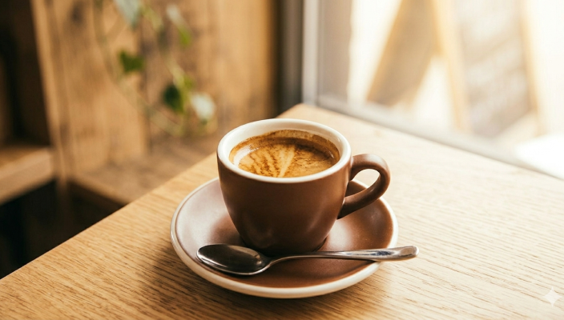
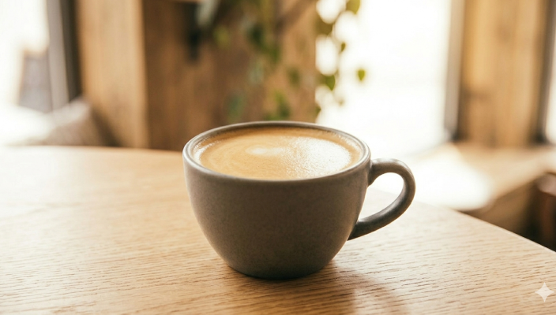
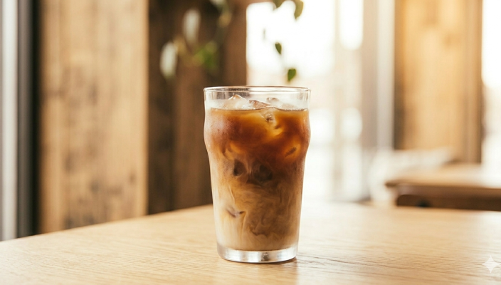
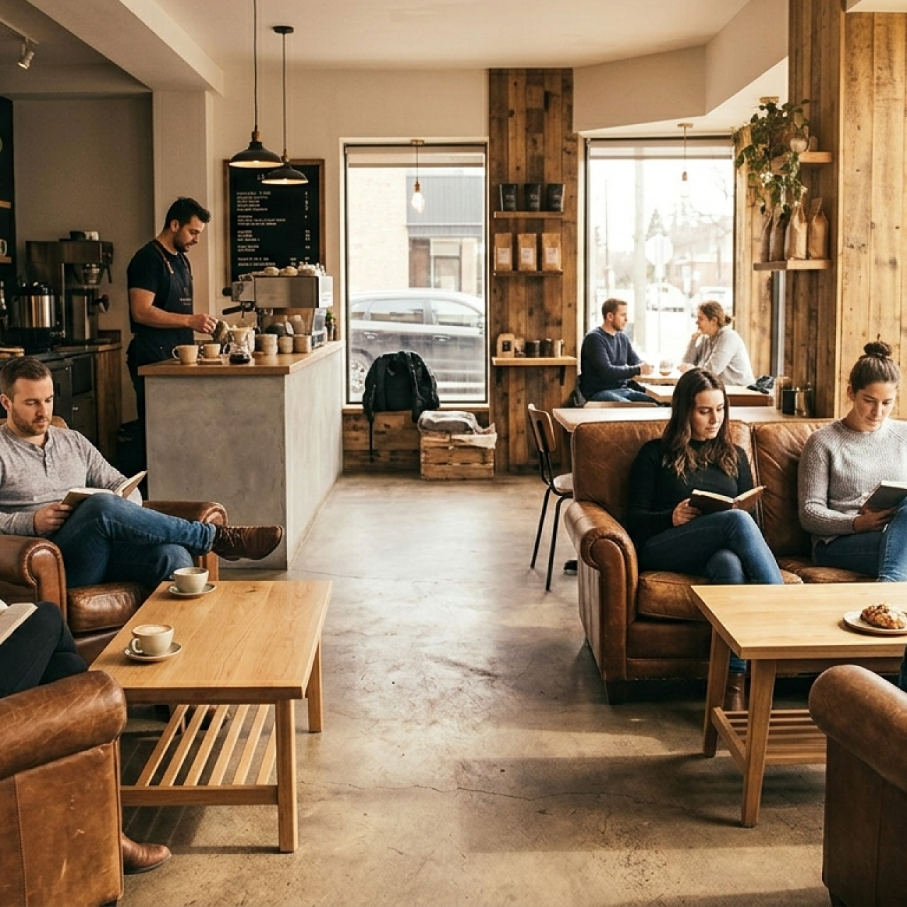

Espresso & Déclinaisons
Notre espresso signature issu d'un blend éthiopien-brésilien. Servi court, allongé ou en latte onctueux.
À partir de 2,50 €Grains sélectionnés à la main, torréfiés à Lyon.
Grão est un café de spécialité indépendant situé dans le quartier de la Croix-Rousse à Lyon. Grains sourcés directement auprès des producteurs, torréfiés sur place chaque semaine.
Des recettes pensées autour de la qualité du grain.

Notre espresso signature issu d'un blend éthiopien-brésilien. Servi court, allongé ou en latte onctueux.
À partir de 2,50 €
Chaque semaine, une origine différente mise en avant. V60, Chemex ou Aeropress — le grain s'exprime pleinement.
À partir de 3,50 €
Café + viennoiserie maison ou café + plat du jour. Nos formules sont renouvelées chaque matin selon l'arrivage.
À partir de 7,90 €Grão a ouvert ses portes en 2019 dans une ancienne imprimerie de la Croix-Rousse. Mia et Théo, ses fondateurs, ont sillonné l'Éthiopie et le Brésil pour sélectionner leurs grains directement auprès des producteurs. Ici, chaque tasse raconte un voyage.
Chaque grain est sourcé directement auprès des producteurs.
Torréfiés à Lyon dans notre atelier, chaque semaine.
Un café de quartier, ancré dans la vie de la Croix-Rousse.

"Le meilleur café filtre que j'ai bu à Lyon. L'ambiance est chaleureuse et le personnel passionné. Je reviens chaque semaine sans faute."
"Un endroit unique où chaque tasse est une découverte. J'ai adoré apprendre l'origine des grains. La formule petit-déjeuner est incroyable."
"Grão c'est mon bureau du matin. Wifi, bonne musique, café d'exception. L'équipe est aux petits soins. Je recommande les yeux fermés !"
12 rue Terme
69001 Lyon — Croix-Rousse
Lun – Ven : 7h30 – 18h00
Sam – Dim : 8h30 – 17h00